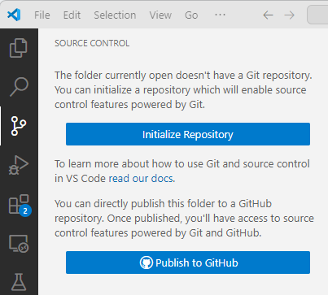
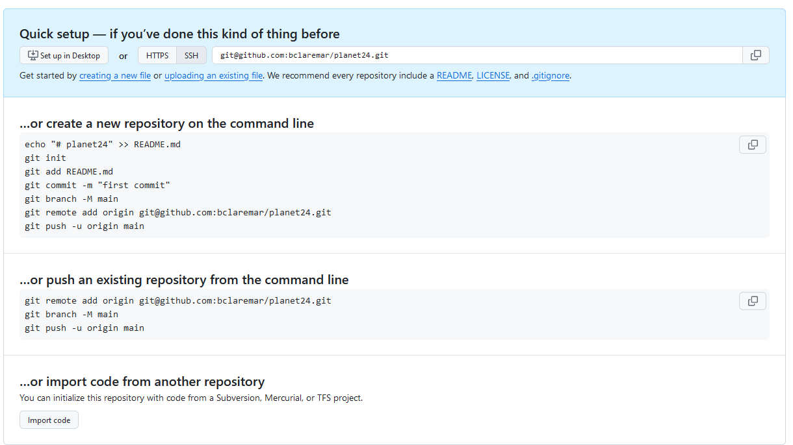

Deploy your code¶
Questions
- How to make your program work for others?
- How to start a git repo from existing code project?
Learning outcomes of 'Deployment'
- I can mentalize the installation needs from the users' perspective
- I can initialize a new project
Content
- We will prepare for user installation of our code
- But also...
- some theory of packages
- some theory of containers
- starting a git repo from existing code project
Instructor notes
Prerequisites are:
- Package
Lesson Plan:
- Total 75 min
- Theory 20+10
- Exercises 30+15 min
Introduction¶
- It's about Distribution!
Note
- Many projects/scripts start as something for personal use, but expands to be distributed.
- Let's start in that end and be prepared.
- The following steps can be very valuable for you in a couple of months as well as you revisit your code and don't know what it does or why you did this and that.
Tip
- Make your program or workflow work for others and yourself in the future.
To make sure about needed dependencies¶
- Reproducibility: We can control our code but how can we control dependencies?
- 10-year challenge: Try to build/run your own code that you have created 10 (or less) years ago. Will your code from today work in 5 years if you don’t change it?
-
Dependency hell: Different codes in the same environment can have conflicting dependencies.
-
2 levels of dependencies
System libraries
- Nowadays platforms are less important, still "system files" may differ among OS platforms and Linux distributions
- will your program require specific "system files"
- are these typically not installed already?
- in the best world test on Windows/Mac and Linux platforms
- and with as empty as possible environment
packages, like in Python
- Python packages
- R packages
- Julia packages
- Matlab Add-ons
Shared services like HPC clusters
- What about Shared services like a cluster where users and most staff do not have writing privileges ('sudo' rights) for system installations?
Discussion: Where do you run your program?
- From a terminal?
- Linux, Mac, Windows?
- From IDE?
- VSCode, RStudio, MATLAB, Jupyter, Spyder, Idle
- On different computers
- Using several platforms
- On a cluster?
- NAISS resources, other?
We need to
- Inform what is needed to run the software in the README file (Next session)
- Or provide them with everything needed (file )
- hopefully not interfering with other software they are using
Ways to distribute
- Python packages:
- pip (PyPI)
- conda
- R:
- R repos like CRAN and GitHub (devtools)
- conda
- Compiled languages:
- built binaries (platform specific)
- install from source
- manual
- make
- CMake
- General tools
- Containers
Conda & pip
These Python-related tools try to solve the following problems:
- Defining a specific set of dependencies, possibly with well-defined versions
- requirements.txt...
- Installing those dependencies mostly automatically
- Recording the versions for all dependencies
- Isolated environments (venv, virtualenv)
- On your computer for projects so they can use different software.
- Isolate environments on computers with many users (and allow self-installations)
- Using different Python/R versions per project??
- Provide tools and services to share packages
- Let's focus here on PyPI!
- Remember we made a package this morning!
- We'll briefly cover the other tools after the exercise.
Recording dependencies¶
- Start with empty environment
Principle using python pip in a virtual environment¶
- We can make other users aware of the dependencies for our Python project.
- One can state those specifically as a list in a README
- Or, we can make a ready file (in python)
Save your requirements as a file
- You may have developed your Python program with your existing python modules environment. You may have installed some new packages during the development but did not track it in a good way.
- We need to identify what python packages a user (or you on another computer) will need, to make the program work!
- There are many packages distributed in the "base" installation of Python so it is not just to look at the import lines in the code.
- You may also be hard to get an overview because you have too many import lines, also distributed among files if you worked in a modular way
Example
Demo with planet
git switch -c venv
python -m venv venv
source venv/Scripts/activate # Mac/Linux has venv/bin/activate
pip freeze #should be empty
ls
cd code
ls
python planet_main.py
import numpy as np
ModuleNotFoundError: No module named 'numpy'
pip install numpy
python planet_main.py
ModuleNotFoundError: No module named 'matplotlib'
pip install matplotlib
pip freeze
pip freeze > requirements.txt
deactivate # deactivate the virtual environment
git add requirements.txt
git commit -m "add requirements.txt"
git push
git switch main
git merge venv
git push
Ignoring files and paths with .gitignore¶
Compiled and generated files are not committed to version control. There are many reasons for this:
- Your code could be run on different platforms.
- These files are automatically generated and thus do not contribute in any meaningful way.
- The number of changes to track per source code change can increase quickly.
- When tracking generated files you could see differences in the code although you haven't touched the code.
For this we use a .gitignore file (put in root folder)
Exercise 1: Identify lacking packages (15-20 min)¶
Tip
- Work individually locally (in VS Code)
- Help each-other if getting stuck
- 2-3 per group
Step 1: Start an EMPTY python virtual environment
- Git pull!
- Go to the dir
learners/<your-name>locally - Check that you can run python from the commandline!
Don't find it?
- If not found, and you have installed Conda/miniconda, "source activate Conda"
Examples, please try to find your solution from these or combination of these.
- Test
which pythonagain!
- Create a virtual environment, called
usertest
- This creates an empty virtual environment located in
usertestdirectory - Activate
- Note the
(usertest)in the beginning of the prompt! Could be together with the conda(base)environment as well. - Check versions
which python # must point to the python belonging to the virtual environment
python -V # note this version (same as you started the virtual environment from)
which pip # must point to the pip belonging to the virtual environment
- Check it is empty with the command
pip list - It should just show
- and some notes.
Step 2: Run the analysis.py script in /src/example and look for missing packages
- Go to the
/src/exampledirectory whereanalysis.pyis - Run the program
- It may give you errors of missing packages
- Install it with
How do I install packages in virtual environments
- Do NOT use
--user, since it should be installed in the virtual environment only.
how to install uppsalaweather
(note the blank space before the package name!
-
Test run the program again
-
If more packages are needed, errors will still show up
-
Do pip installations until your program works!
-
Otherwise continue to next step
Step 3: Save your requirements as a file that user can run to get the needed dependencies
- Check what is installed by:
- You will probably recognise some of them, but some may be more obscure and were installed automatically as dependencies.
- Save your requirements as a file in your learners folder.
-
Other users can then install the same packages with:
-
End the isolated environment
- Push the changes
(Optional) Step 4: Test the requirements file in a new environment
-
Double-check it works by:
-
Create another virtual environment
- Activate
- Note the
(usertest2)in the beginning of the prompt!
- Run the program!
No errors should show up!
(Optional) Step 5: Add the folder to .gitignore
- Add test directory to
.gitignorefile (root folder in repository)
Push changes
- Git push!
- You should all have a requirements file in your folder
Follow up¶
Requirements file enabling test packages to be found
--index-url https://test.pypi.org/simple/
--extra-index-url https://pypi.org/simple
--pre
uppsalaweather==0.9
- possibly not all of the 3 upper lines are needed
(One person): Move a working requirements file to the src/learners folder
- Move the requirements file to the
learners/sourcefolder - This will be the "official" requirements file
- That person git commit and pushes to GitHub!
Going further with deployment¶
Python for scientific computing
Course advertisement
Possibilities for other languages can be
Compiled language, course
Containers
-
Containers let you install programs without needing to think about the computer environment, like
- operative system
- dependencies (libraries and other programs) with correct versions

From Nextlabs:
Info
-
2(3) types
- Singularity/Apptainer perfect for HPC systems
-
Docker that does not work on HPC-systems
- But docker images can be used by Singularity and Apptainer
-
Everything is included
-
Workflow:
- Download on Rackham or local computer
- Transfer to Bianca
- Move to from wharf to any place in your working folders on Bianca
-
Draw-backs
- you install also things that may be already installed
- therefore, probably more disk space is needed
Quality of life¶
-
Run a python script without the
pythonbefore in a linux environment! -
This line helps in the top of the main script:
-
Then the python active in "PATH" will automatically be used
- especially important on a shared system where python is not in the typical
/usr/bin/pythonpath.
- especially important on a shared system where python is not in the typical
-
Run from command line as:
Start a Git/GitHub repo from personal existing project¶
- Many projects/scripts start as something for personal use, but expands to be distributed.
- Let's start in that end and be prepared.
Principle¶
- Initiate git project
- Browse to right root directory (the folder containing all the project-related files)
- Stage and commit
- upload to github
(Optional) Exercise 2: 10-15 minutes¶
- Let's say you have some code you have started to work with
Tip
- Work individually locally (in VS Code or terminal)
- Help each-other if getting stuck
- Start with 1A OR 1B
- 1a goes to Breakout room 1
- 1b goes to Breakout room 2
Exercise 1A: Identify existing project
- Just use an existing programming project you already have
- Browse to right root directory (the folder containing all the project-related files)
Exercise 1B: Make a code base for a new test project
- Make a
test_projectdirectory in a good place (like a localProgramming formalismscourse folder)
Exercise 2: Initiate the project
VS CODE

-
RECOMMENDED Publish to GitHub diectly and you are done!
- You may change the name of the repo for the GitHub instance, but not recommended.
- Include the file(s) (in this case the hello.py file) in the repo!
- Double check it was created on GitHub!
- It should show up under repos in your user space
-
ALTERNATIVE: Initialize and then continue with step 3.
Terminal
- Be in a terminal and go to the
projectfolder, which will be the project repository (repo) - run
git init -
make sure that there is a
.gitdirectory created- you have to show hidden files, in bash terminal with
ls -a
- you have to show hidden files, in bash terminal with
-
Now you have a git repo called
test_project - Check with the command:
git status- It is always a safe command to run and in general a good idea to do when you are trying to figure out what to do next.
(If needed) Exercise 3: Add and commit the content
- So far, there is no content. We have to manually add the content to the repo.
- Add and Commit your changes
VS Code
We do this all the time! :)
(If needed) Exercise 4: Upload to GitHub
In VS Code
- There is an opportunity to directly publish on GitHub
From GitHub
- Make sure that you are logged into GitHub.
- You can use this for both VS Code and terminal

-
To create a repository we either click the green button "New" (top right corner).
-
Or if you see your profile page, there is a "+" menu (top right corner).

-
On this page choose a project name, e.g.
test_projector a project name suiting your existing project. -
NOTE It is not necessary to have the same name but it makes things easier to know what is what when syncing between GitHub and git.
-
For the sake of this exercise do NOT select "Initialize this repository with a README"
- and NO Licence

Example project
- Press "Create repository"

- Choose html
- Copy-paste the code for "…or push an existing repository from the command line"
- Go to local git terminal and go to the git project you started above
-
Paste the code
-
Did it work??
- Reload the GitHub page and see the files present locally is also present there.
Done!
What we did¶
Workflow
graph TB
P["Project idea"] -->|git init| Node2
P["Project idea"] --> hello.py -->|git add| Node4
Node4 --> |git commit| Node1
Node2 --> |git push| Node5
%% C[Uncommited changed hello.py] -->|commit button| R
R <--> Node5
subgraph "Local Git"
Node2[project]
Node1[hello.py]
Node1 <--> Node2
end
subgraph "staging area"
Node4[hello.py]
end
subgraph "GitHub"
Node5[project]
R[hello.py]
end
About releases
Summary¶
Key points
Make sure it works for others or yourself in the future!
Parts to be covered!
- ☑ Source/version control
- Git
- GitHub as remote backup
- inititalize from existing project
- branches
- ☑ Planning
- ☑ Analysis
- ☑ Design
- ☑ Testing
- Different levels
- ☑ Collaboration
- GitHub
- pull requests
- ☐ Sharing
- ☑ open science
- ☐ citation
- ☐ licensing
- ☑ deploying
- ☐ Documentation
- ☑ in-code documentation
- ☐ finish documentation